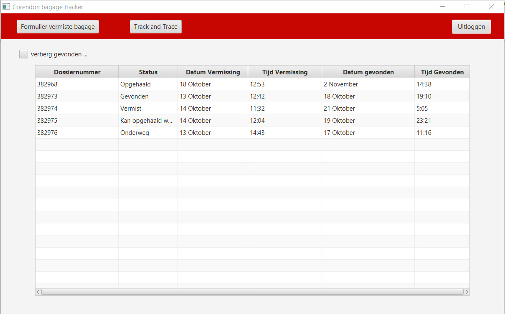
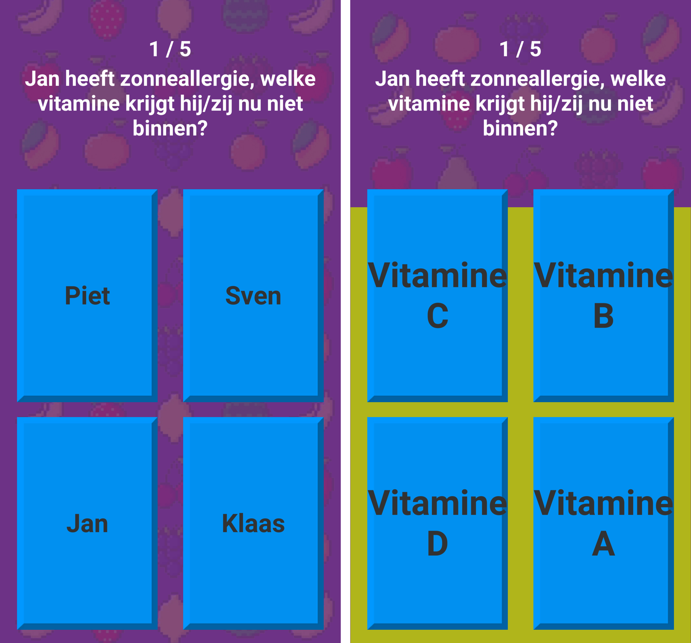

Aangezien ik niet heel veel programmeer in mijn vrije tijd, vind ik niet dat ik een hoger cijfer verdien. Het werk wat ik lever vind ik van goede kwaliteit, maar ik vind dat ik mijn programmeerkennis meer zou moeten bijspijkeren. Ook zou ik meer planmatig moeten werken.
Doel: k wil meer programmeren en meer oefenen in mijn vrije tijd. Dit doel is behaald als ik alle programmeer gerelateerde vakken heb gehaald. De vakken zijn OOP2, Datastructures en Sorting & Searching. Voor het verbeteren van mijn planvaardigheid ga ik het PSP vak Time Management volgen en de kennis daarvan toepassen. Ook ga ik OOP2 opnieuw volgen in het derde blok.
Over het algemeen ben ik goed in het analyseren van problemen. Tijdens het schrijven van mijn onderzoeksverslag voor Research Skills merkte ik dat mijn onderzoekend vermogen er op vooruit ging. Ik heb hier verschillende bronnen gebruikt en er een lopend verhaal van gemaakt. Vooral in de laatste weken merkte ik dat dit een goed lopend verhaal werd.
Doel: Tijdens PAD ging mijn projectgroep werken met Unity. Ik merkte dat het handiger was geweest als ik meer tijd had besteed aan het leren van Unity. Daarom wil ik tijdens Project EWA meer aandacht besteden aan leerstof dat gerelateerd is aan het project.
Ik merk dat ik leerstof goed onthoud als ik het regelmatig herhaal. Wat ik heb gemerkt tijdens deze opleiding is dat als ik een vak niet zo interessant vind, dat ik het niet goed onthoud. Ook merkt ik dat als ik te laat begin met leren, dat de leerstof niet goed in mijn hoofd blijft zitten. Ik moet werken aan mijn leervermogen.
Doel: Ik wil mijn leervermogen verbeteren door een planning te maken voor wanneer ik leer en welke vakken ik leer. Dit is vooral belangrijk voor het behalen van mijn propedeuse vakken. Dit doel is behaald als ik mijn propedeuse vakken heb gehaald. Ook ga ik na het houden van mijn portfolio presentatie en de feedback die ik daarop heb gekregen, een reflectie schrijven erover.
Tijdens FYS maakte mijn projectgroep veel gebruik van Discord en Whatsapp. We merkte dat we snel afgeleid werden en kwamen dus vaker bij elkaar om het project tot een succesvol einde te brengen. In het begin van het project merkte ik dat ik beter moest communiceren. Om een voorbeeld te noemen: We moesten een mockup maken. Ik was hier al aan begonnen zonder mijn teamgenoten te informeren. Toen ik het vervolgens liet zien was het voor het grootste gedeelte al af. Hierna ben ik meer gaan communiceren met mijn teamgenoten. Bij PAD ging ik naast meer communiceren ook meer vragen om feedback en mijn teamgenoten informeren over de status van mijn werk. Ik merk dat ik nog wel zou moeten werken aan het communiceren met leidinggevende en klanten. Tijdens besprekingen met de Project Manager bij PAD kwamen mijn teamgenoten meer aan het woord dan ik, omdat ik meestal dezelfde mening deelde en niets had toe te voegen. Ik zie vooruitgang, maar het kan beter.
Doel: Ik wil tijden Project EWA meer naar de voorgrond komen en meer mijn mond open doen als we overleggen met leidinggevende en klanten. Dit doel is behaald als mijn teamgenoten het eens zijn dat ik genoeg praat met leidinggevende en klanten dan voorheen.
Ik merk dat de laatste jaren een steeds grotere nadruk wordt gelegd op privacy en security in de ICT sector. Ik houd mijzelf up to date met de veranderingen in de ICT, maar ik denk dat ik mij meer moet informeren over dit onderwerp.
Doel: Ik ga een stuk schrijven over hoe afhankelijk we zijn geworden van ICT, om zo een beter beeld te krijgen van deze competentie.
Ik vind dat ik tijdens deze opleiding en vorige opleidingen mijn samenwerkingsvermogen er erg op vooruit gegaan is. Dit was voorheen niet zo, omdat ik erg zelfstandig ben. Ik ben bij projectdagen en vergaderingen altijd aanwezig. Toen ik besloot te stoppen met de opleiding Game Artist, was er nog een project aan de gang. Ik had toen besloten het project af te maken en daarna pas te stoppen met de opleiding, zodat ik niet mijn teamgenoten in de steek liet. Ik merkte dat ik tijdens FYS en PAD minder in de achtergrond zat dan voorheen. Ik vroeg vaak om feedback aan mijn teamgenoten. Niet alleen voor de feedback, maar ook om hun te laten zien waar ik mee bezig was. Ik heb nog niet veel ervaring opgedaan in leiding geven.
Doel: Ik wil tijdens Project EWA een leidinggevende rol krijgen, zodat ik ervaring kan opdoen in leiding geven. Dit doel is behaald als mijn teamgenoten van mening zijn dat ik leidinggevende vaardigheden heb gehaald.
Tijdens Project Fasten Your Seatbelts (FYS) moesten wij in groepsverband een applicatie ontwerpen en realiseren voor Corendon Airlines. Deze applicatie moest de afhandeling van vermiste en gevonden bagage meer gestroomlijnd laten lopen.
Tijdens Project Agile Development (PAD) moesten wij in groepsverband een applicatie ontwerpen en realiseren voor Waag Society. Deze applicatie had als doel studenten gezonder te laten eten en bewust te laten worden van hun eetgedrag. Uiteindelijk hebben wij als team een game gemaakt voor Android, waar je op 1 telefoon met meerdere mensen vragen beantwoord over voeding.
Ik ben nog niet geschikt om naar de verdiepingsfase te gaam omdat ik mijn propedeuse nog niet heb. Ik ben van plan de vakken opnieuw te gaan volgen.
Volgens mijn PAD groepje ben ik een harde werker, gemotiveerd, creatief en leergierig
Ik heb het PSP vak Time Management gevolgt en ik ben van plan later nog een PSP vak te gaan volgen. Als Themasemester lijkt Mobile Development leuk om doen. Voor stage wil ik het lieftst werken aan mobile of web applicaties en in een midden-klein bedrijf.
Ik moet verder werken aan mijn Communicatief vermogen, door meer te communiceren met leidinggevende en klanten. Ook moet ik werken aan Beroepsethiek & maatschappelijke oriëntatie, omdat ik hier nog niet veel van af weet.
{kind=link}
{kind=link}
{kind=link}